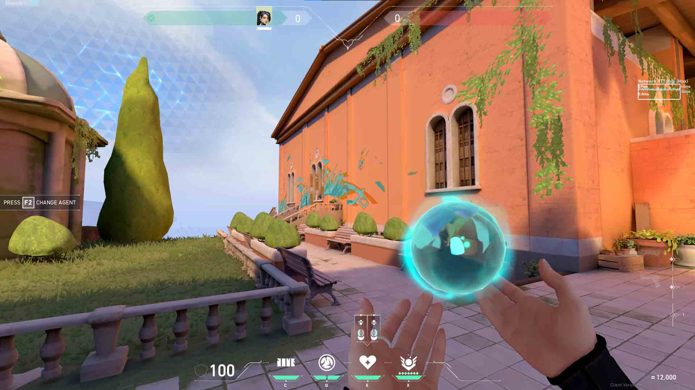
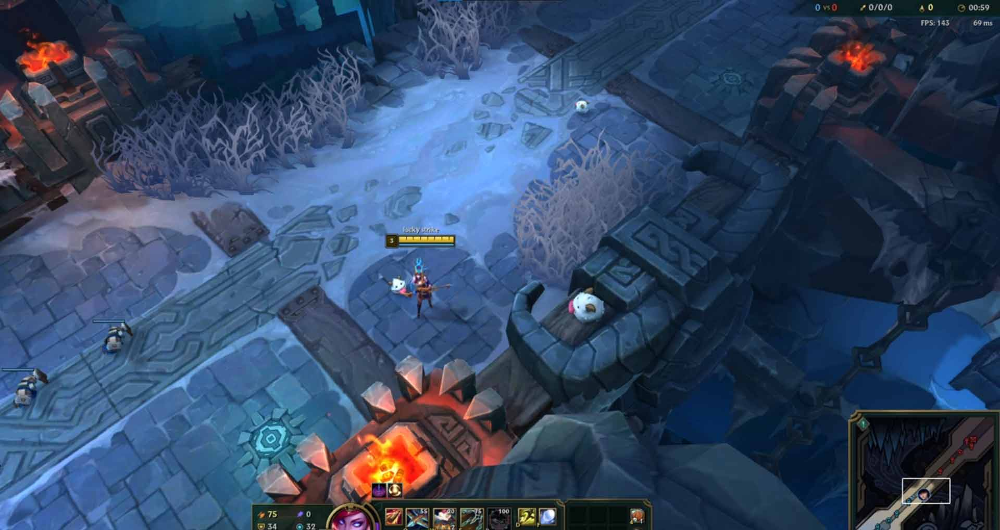
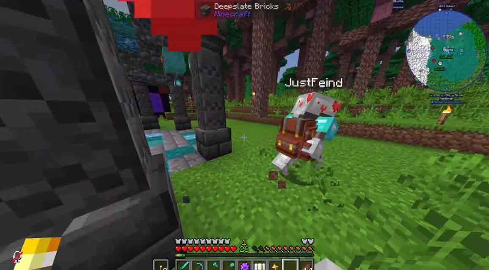
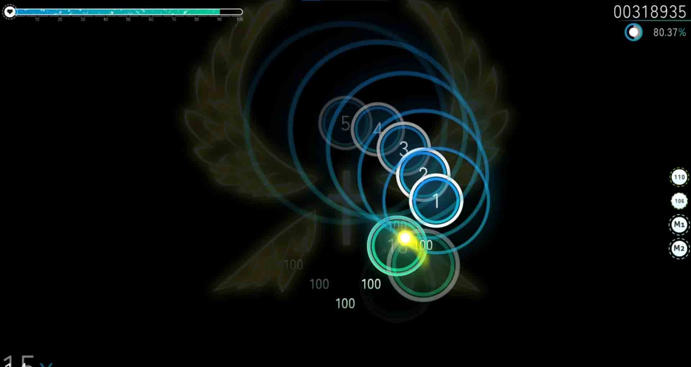
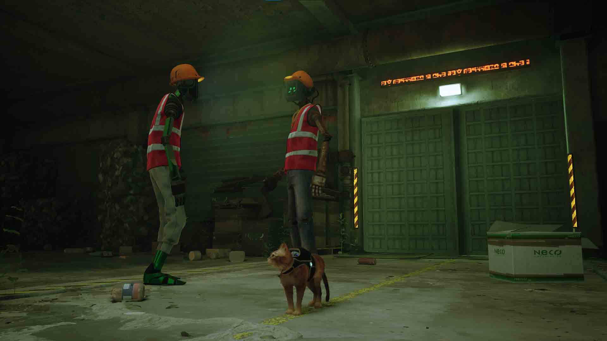
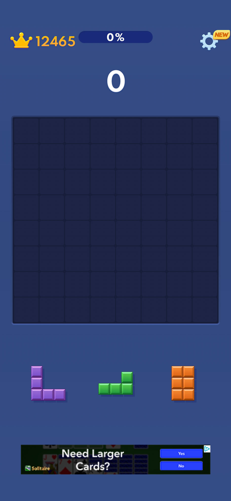

Valorant

Valorant Range
Released in 2020, Valorant is an online, team-based, first-person shooter game similar to Counter-Strike: Global Offensive (CS: GO). In this game, you are paired with four other players to fight against five enemy players. The objective is unchanging, regardless of the different game modes Valorant offers. When you begin a game, you are given one of two sides; Defender or Attacker sides. Attacker side’s objective is to get to a site and plant what is called a “spike” which is a bomb and defend it until it explodes. On the other hand, Defender side’s objective is to eliminate the other team and defuse the spike they planted.
League of Legends

Howling Abyss, League of Legends
Created by the same developers who created Valorant, League of Legends is an online multiplayer game based on a very popular game named Warcraft. It has two teams of five players, each controlling distinct champions with unique abilities. The game’s primary objective involves battling the enemy team to destroy the enemy team’s Nexus (main base) while defending their own. Players earn gold and experience by defeating enemy players, minions, and neutral monsters to buy items which upgrade a player’s statistics.
Minecraft

A Modded Minecraft Server
Minecraft is one of the most popular games in the world which gives the players access to limitless possibilities due to its sandbox nature. The player spawns in a blocky world and is given little direction. This allows the player to play however they desire. Two of the most common game modes played in the game are Survival (where players must manage their health and hunger) and Creative (where health and hunger are irrelevant and players have access to unlimited resources for building). The game also allows for online multiplayer features which enhances the Minecraft community.
Osu!

An Osu! Beatmap
Osu! is a free-to-play rhythm game published in 2007. It is quite old in terms of the gaming world, meaning it is highly community-driven. The game is built on user-created beat maps, global leaderboards, and competitive play. The community and the active beat-map creators make Osu! a popular choice for rhythm game enthusiasts. The most notable game mode Osu! offers is Osu! (Standard). Standard has players click, hold, and slide on beats in sync with the music.
Stray

Two Robots
Stray is a single-player video game which is developed by BlueTwelve Studio. The player plays in third-person as a cat navigating through a futuristic, cyberpunk-style city inhabited by robots. As you traverse through the worlds, you are met with several puzzles and some intense situations all to uncover the city’s past.
Block Blast

Starting Block Blast Board
Block Blast is a mobile puzzle game published by Hungry Studio and is available on both iOS and Android. Players can load up a classic match which opens a blank board and three different blocks that players can put on the board. Completing rows or columns frees space on the board and gives points. The longer the game goes, the harder it gets to place different blocks.